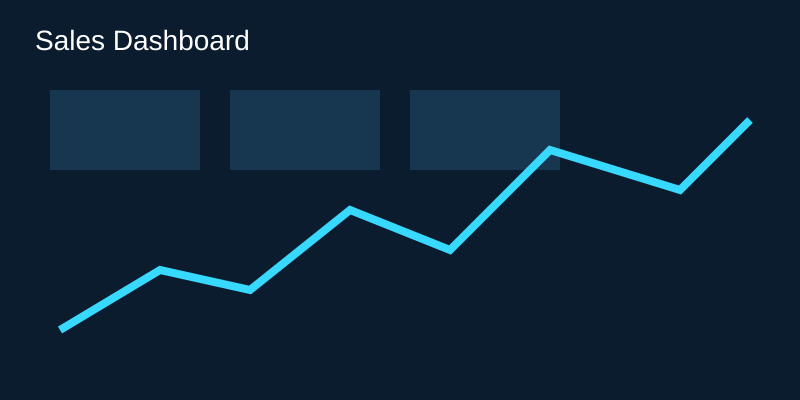
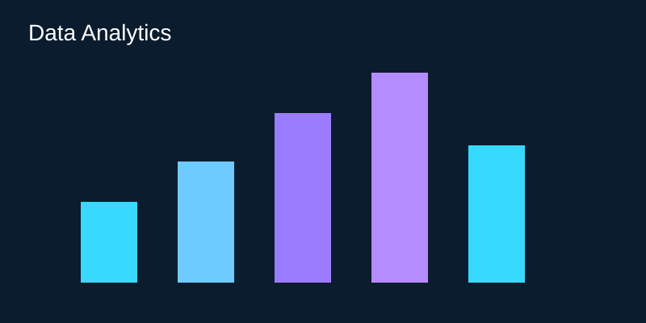

Sales Data Dashboard
Power BI dashboard for sales KPIs and trends.
I am a Computer Science Engineering graduate with experience in data validation, quality analysis, process operations and data visualization.
Explore My Work Download ResumeI work with Excel, Power BI, SQL and Python to organize information, identify discrepancies and create meaningful visual insights.
Jul 2025 – Present

Power BI dashboard for sales KPIs and trends.
Machine learning prediction using environmental factors.
Random Forest machine learning project.

Business data analysis and insights.
Nandha College of Technology | 2021–2025 | CGPA 7.96
2020–2021 | 81.15%
Java Programming • Excel • SQL • Python • DSA in Java
Open to opportunities in data analytics, quality analysis, process operations and technology roles.
Get In Touch